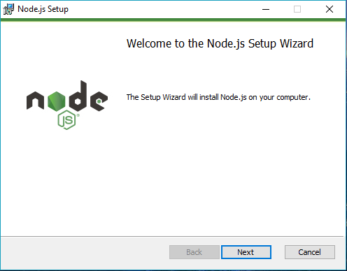

Ques 1: Introduction to the JavaScript?
OR: What is the JavaScript?
Ans: JavaScript is a lightweight, object-oriented programming language, cross-platform, single-threaded, and interpreted. It is also known as the scripting language for webpages. It allows developers to create dynamically updating content, use animations, pop-up menus, clickable buttons, control multimedia, etc.
# JavaScript is used to create client-side dynamic pages that is used to make websites more interactive.
# JavaScript is an essential tool for front-end web development, & it is also used on the back end of a web application.
# JavaScript is a popular and widely used language to build a wide range of applications, including mobile applications, desktop applications, and games applications.
# A scripting language that allows you to implement complex features on web pages.
# Enables you to update content dynamically, control multimedia, animate images, and much more..
# We use HTML to structure and give meaning to our web content, CSS to apply styling to our HTML content and javascript to add behaviour aspect and to make the page interactive.
# Javascript is an object-based scripting language which is lightweight and cross-platform. JavaScript is not a compiled language, but it is a translated language. The JavaScript translator is responsible for translating the JavaScript code for the web browser.
# It is an interpreted, full fledged programming language that enables dynamic interactivivty on websites. When applied to an HTML document. JavaScript has no connectivity with java programming language. The name was suggested and provided in the times when java was gaining popularity in the market. In addition to web browsers, databases such as cache DB and MongoDB uses javascript as their scripting and query langauage.
Ques 2: What is the extension of JavaScript?
Ans: The extension of JavaScript is .js
Ques 3: Web pages before JavaScript was introduced?
Ans: Before JavaScript was developed, web pages were static and could not be changed by the user. If a web page needed to display dynamic content or respond to user input, the entire page would have to be reloaded from the server. This made the web a less interactive and responsive experience for users.
Ques 4: What does JavaScript adds to web development?
Ans: Some specific things that JavaScript adds to web development
Ques 5: Why JavaScript?
Ans: JavaScript is a popular programming langauage that is widely used to build web applications. It is a client-side scripting language, which means that is run by your web browser rather than on a server. this makes it a good choice for building web appliactions that need to be fast and responsive, as the code is run locally on the user's device rather than having to be sent back and forth between a server and and a client. JavaScript is also used to build mobile apps, create interactive documents, and build server-side applications with the help of runtime environments such as Node.js.
Ques 6: Why JavaScript has become so popular?
Ans: There are several reasons to JavaScript has become so popular:
Ques 7: Overview of JavaScript?
Ans: Javascript is a dynamic programming language that's used for web development, web applications, game development, and lots more. it allows you to implement dynamic features on web pages that cannot be done with only HTML and CSS.
It is a client-side scripting language, which means that is executed by the web browser on the user's device rather than on a server, allowing for fast and responsive user interactions without the need for a page refresh. it is also an object-oriented langauge, which means it is based on the concept of objects and their methods, allowing for encapsulation and reusability of code.
Javascript can be added to a web page by including it directly within the HTML file using a script tag, linking to a seprate .js file, or through various frameworks and libraries such as jQuery, React.js, Angular.js and Vue.js, etc..
JavaScript also has a large and active developer community, and it is a language in high demand for web development, with many resources available for learning the language and getting help when you need it. It is constantly evolving with new updates, enhancements, and new tools. With the rise of web development and the proliferation of web-enabled devices and technology, it has become a must-have skill for any web developer or anyone looking to work in the tech industry.
Ques 8: History of JavaScript?
OR: Why JavaScript came into the Pictures?
OR: The Evolution of JavaScript?
Ans: JavaScript was created in 1995 by Brendan Eich, a programmer at Netsacape Communication Corporation. It was originally called Mocha, then changed to liveScript, and finally, it was given the name JavaScript to leverage in Netscape Navigator 2.0, a popular web browser of the time.
# In 1996, Javascript was submitted to the Europen Computer Manufactures Association (ECMA) and it was standardized as ECMAScript. This standardized version of JavaScript is still used today and is supported by all modern web browsers like Google chrome, Mozilla FireFox, Apple Safari, Microsoft Edge, etc.
# In the early days of JavaScript, it was primarily used for simple things like form validation and simple mouse interactions, but as browsers became more powerful and web standards evolved, JavaScript became more widely used for building more complex web applications. With the introduction of popular libraries and frameworks like jQuery, AngularJS, React, and Vue.js, it has become easier to build complex and powerful web applications using JavaScript.
# The emergence of Node.js in 2009 made it possible to run JavaScript on the server side and it become more popular as a full-stack language, allowing for code reuse and sharing between the client side and the server side.
# JavaScript was designed to be a lightweight, easy-to-learn programming language that could be used to add interactivity to web pages. It was originally developed by Netscape, and it was quickly adopted by other web browsers. Today, JavaScript is one of the most popular programming languages in the world, and it is used on almost every modern web page.
# Now a days, most major online companies today, including Facebook, Twitter, Netflix, and Google, all use JavaScript in their products.
Ques 9: What is ECMAScript?
Ans: ECMAScript (often referred to as simply "JavaScript") is a programming language specification standardized by the European Computer Manufacturers Association (ECMA). It was first published in 1997 and is used to create scripts for the web and other environments. JavaScript is the most widely-used implementation of ECMAScript and is supported by all major web browsers.
ECMAScript defines the syntax, semantics, and features of the language, and specifies how it should be implemented. The specification includes things like:
Ques 10: Versions of ECMAScript?
Ans: ECMAScript has several versions, with the latest one being ECMAScript 2022 (ES13). Each new version of ECMAScript adds new features and updates the existing ones. The first version was introduced in 1997 as ECMAScript 1. In which they introduced basic JavaScript syntax and features. Major updates in JavaScript were introduced in ECMAScript 6 (2015) and they make JavaScript a more powerful, expressive, and efficient language, allowing developers to write more maintainable and scalable code.
Ques 11: Overview of TypeScript?
Ans: TypeScript is a typed superset of JavaScript that adds optional static types, class-based object-oriented programming, and other features to the dynamic and flexible nature of JavaScript. It is designed to make large-scale JavaScript development more manageable and scalable.
One of the main features of TypeScript is its support for static type checking. This means that the TypeScript compiler can analyze the code and check for type-related errors, such as passing a string where a number is expected before the code is run. This can help to catch and prevent errors early on in the development process, which can save time and effort in the long run.
Ques 12: What is Node JS?
Ans: Node.js is an open-source, cross-platform javaScript runtime environment that enables developers to run JavaScript code on the server side. It allows developers to create concurrent connections and real-time applications such as chat, gaming, and other types of applications needing real-time processing. It also has a large and active developer community that supports and maintains a vast ecosystem of open-source libraries and modules, making it easy to add functionality and integrate with other technologies.
Ques 13: What are the features of Node JS?
Ans:
Ques 14: Applications of Node JS?
Ans:

Ques 15: How to download and install Node.JS?
Ans: To download and install Node.js, you can follow these steps:>
:: Download Node.js msi Installer instructions ::
Step 1: Downloading the Node.js ".msi" installer the first step to install Node.js on Windows is to download the installer. (Visit the official Node.js website)
Node.js InstallerOR
Node.js Installer
:: Installation Node.js msi installer instructions ::
Step 2: Running the Node.js installer. Now you need to install the node.js installer on your PC. You need to follow the following steps for the Node.js to be installed.
Step 3: Go and click on that "This PC".

Step 4: Go to click on that "Downloads" folder inside "This PC".

Step 5: Double click on the .msi installer. The Node.js Setup wizard will open.
Step 6: Welcome To Node.js Setup Wizard. Select on that “Next".
Step 7: Destination Folder, Set the Destination Folder where you want to install Node.js & Select on that “Next”.

Step 8: Custom Setup, Select on that “Next”

Step 9: Ready to Install Node.js. The installer may prompt you to “install tools for native modules”. Select on that “Install”

Step 10: Do not close or cancel the installer until the install is complete. Complete the Node.js Setup Wizard. click on that "Finish".
Step 11: Verify that Node.js was properly installed or not. To check that node.js was completely installed on your system or not, you can run the following command in your command prompt or Windows Powershell and test it:- C:\Users\Admin> node -v
Note: If node.js was completely installed on your system, the command prompt will print the version of the Node JS installed.
Ques 16: What is Runtime?
Ans: Runtime is a piece of code that implements portions of a programming language's execution model. Doing this, allows the program to interact with the computing resources it needs to work? Runtimes are often integral parts of the programming language and dont't need to be installed separately
Runtime is also when a program is running? That is, when you start a program running on a computer, it is a runtime for that program? In some programming languages, certain reusable programs or "routines" are built and packaged as a "runtime library?" These "routines" can be linked to and used by any program when it is running
Ques 17:What is Runtime in JavaScript?
Ans: In JavaScript, runtime refers to the period during which a JavaScript program is executed by a JavaScript engine. When a JavaScript program is loaded into a web page or runs using a command-line tool, the JavaScript engine starts to execute the code. The JavaScript engine follows a set of rules, known as the JavaScript specification, to interpret and execute the code.
During runtime, the JavaScript engine creates an execution context, a data structure containing the variables, functions, and other resources needed to execute the code. The engine then starts to execute the code, line by line, in the order it appears in the program
JavaScript is a single-threaded language, which means that only one task can be executed at a time. However, JavaScript provides mechanisms such a callbacks and promises, to handle asynchronous operations and avoid blocking the execution of the code
It's worth noting that JavaScript's runtime is different from other languages' runtime as when it is used for developing web applications, it runs on the browser on client side and for server side programming , it is run with Node.js. So the environment and the runtime are different.
Ques 18: How does JavaScript Runtime work?
Ans: JavaScript runtime works by interpreting and executing JavaScript code. When a JavaScript program is loaded into a web page or runs using a command-line tool, the JavaScript engine starts to execute the code. The engine follows a set of rules, known as the JavaScript specification, to interpret and execute the code.
The JavaScript engine creates an execution context for each function call and a global execution context for the entire program. The execution context contains the variables, functions, and other resources needed to execute the code. The engine then starts to execute the code, line by line, in the order it appears in the program.
JavaScript is a single-threaded language, which means that only one task can be executed at a time. However, JavaScript provides mechanisms such as callbacks and promises, to handle asynchronous operations and avoid blocking the execution of the code.
The JavaScript engine also includes a garbage collector, which constantly monitors the heap and frees up memory that is no longer being used. This is done in a way that does not interrupt the program execution.
JavaScript runtime in a browser is executed in a sandboxed environment, which means that it is limited in the resources it can access and what it can do. This is to protect the user's computer from malicious code. For example, JavaScript code running in a browser cannot access the user's file system or make arbitrary network connections.
JavaScript runtime on the server side, with Node.js, has more freedom and can access the file system, network resources, and more. The runtime is also different as it uses the V8 JavaScript engine developed by Google instead of the browser's JavaScript engine.
In summary, JavaScript runtime works by interpreting and executing JavaScript code in the order it appears. The JavaScript engine creates execution contexts, manages the execution flow, and handles memory management through garbage collection. The runtime also has some limitations in a browser environment to protect the user's computer.
Ques 19: What is V8?
Ans: V8 is an open-source JavaScript engine developed by Google which is used in the Google Chrome browser and also used in the runtime environment for Node JS. It's responsible for executing JavaScript code within the browser, parsing and compiling JavaScript code into machine code for faster execution.
V8 is known for its high performance, scalability, and compatibility with modern JavaScript features and APIs. The engine is implemented in C++ and is designed to handle complex, large-scale JavaScript applications, making it ideal for use in high-performance web browsers and server-side JavaScript environments.
The source code for V8 is freely available, allowing developers to contribute to its development and use it in their own projects. The V8 project has been actively maintained and developed by Google since its creation, and it continues to be a critical component of the Google Chrome browser and other web-based applications
Ques 20:What are the Key features of V8?
Ans:
Ques 21: What is Libuv?
Ans: libuv is a cross-platform library for asynchronous I/O, developed for use in Node.js. It provides a uniform API for working with asynchronous I/O operations, such as file system operations, network communication, and timers.
Libuv abstracts away the differences between various operating systems and provides a consistent, high-level API for performing asynchronous I/O operations. This allows developers to write asynchronous code that works seamlessly across different platforms, without having to worry about the underlying operating system details.
In addition to its core I/O functionality, libuv also provides other features, such as thread pooling, process management, and signaling. These features make it a versatile and powerful library for building scalable and efficient applications.
Libuv is an open-source project and is used by a number of popular projects, including Node.js, and several other applications and frameworks. The library is actively maintained and has a large and active community of contributors and users, making it a well-supported and widely used tool for asynchronous I/O.
Ques 22: What are the Key features of Libuv?
Ans:
Ques 23: Where not to Learn / Written / Executes JavaScript codes?
Ans: All the people go to any browser and right click -> Inpect -> go to the console and learn Javascript. He is not able to learn Javascript professionally. Because whatever JavaScript you are writing or learning in the console is not modern JavaScript, JavaScript is not learned in this way.
Ques 24: How is JavaScript executed/run in the console inside the browser?
Ans: There is an engine in the browser, which is executing/running in the console.
There are two types of engines in browsers.
Note: For years, the execution engine used to come attached to the browser, but then some engineers removed the JavaScript execution engine and some engineers packed the JavaScript execution engine and divided it into different parts, like we used python, C++, Java, etc.. are able to execute/run, similarly if you install the engine inside your system/laptop, then similarly you will be able to execute JavaScript also standalone. Now like v8 engine, spidermonkey, etc.. there are many similar engines which have been installed on top of these engines, wrapper engine (wrapper engine means some more utility has been added) which became Node.js node.js is Open-source, Cross-Platform, Javascript Runtime environment. Browser engine understand three things HTML, CSS, and Javascript.
Ques 25: What are the runtime environments of JavaScript?
Ans: The Runtime environments of JavaScript are:
Ques 26: What are the features of javascript?
Ans: Features of JavaScript are:
Ques 27: What are the Applications of JavaScript?
Ans: JavaScript is used to create interactive websites. It is mainly used for:
Ques 28: What is the JavaScript Comments?
OR: Explain the JavaScript Comments?
Ans: The JavaScript comments are meaningful way to deliver message. It is used to add information about the code, warnings or suggestions. So that end user can easily interpret the code.
# The JavaScript comment is ignored by the JavaScript engine i.e, embedded in the browser.
Ques 29: What are the advantages of JavaScript comments?
Ans: There are mainly two advantages of JavaScript comments:
Ques 30: What are the Types of JavaScript comments
Ans:There are Two Types of JavaScript comments:
Ques 31: What is JavaScript Variable?
OR, Introduction to JavaScript variables?
OR, Explain the JavaScript Variable?
Ans: Variables are like containers, they are used to hold the information we will need when programming. Variables store data of any datatyp- that can be used throughout a program.
Variable means anything that can vary. Variables hold the data value and it can be changed anytime we want.
Creating a variable is also called declaring a variable.
A javascript variable is simply a name of storage location.
There are two types Variables in JavaScript:
Ques 32: What are the ways to create a varibale in JavaScript?
Ans: There are four ways to create a variable in JavaScript.
Example:
var name = "PW Skills"; // var keyword.
let name = "PW Skills"; // let keyword
const name = "PW Skills"; // const keyword
name = "PW SKills"; // No definition
Ques 33: What is Naming variables in JavaScript?
Ans: When naming the variables, we must consider making the names descriptive and easily understandable. This will make our program easy to read and understand in the future when we have to refactor it.
Ques 34: What are the Rules for declaring naming variable?
Ans: Here are some rules one should look out for when declaring naming variables.
Example:
var name = "PW SKills";
var Name = "PW SKills";
var _name = "PW SKills";
var $name = "PW SKills";
Example:
var companyName = "PW Skills"; // Camel Case
var CompanyName = "PW Skills"; // Pascal Case
var company_name = "PW SKills"; // Snake Case
Ques 35: Assigning values to variables?
Ans: Storing data in a variable is also called assigning a value to a variable. To store data in a variable(assign value to a variable), use the = symbol. Place the variable name on the left side of the = symbol and place the value to store in the variable goes on the right side of the = symbol.
The = symbol is called the assignment operator. We will look into operators in depth in further lectures
Variables can be created before assigning values to them.
Example:
var name = "PW Skills";
console.log(name)
Output:
PW Skills
Whenever we create a variable without assigning a value to it, by default javascript stores undefined [absence of the value].
Values can also be assigned to variables at the moment of creating them. Creating variables and assigning values to them at the same time is known as initializing a variable.
Example:
var name = "PW Skills";
var students = 12345678;
var enrolledToFSWD = true;
var name = "PW Skills", students = 12345678, enrolledToFSWD = true;
Ques 36: Introduction to typeof?
Ans: The "typeof" operator is a JavaScript operator that allows checking the data type of a given variable. It can be used with any data type, including objects, arrays, and even null values
typeof operator is very useful for determining the data type of a given variable. In addition, it can also be used to check for null values.
var name = "PW Skills";
var students = 12345678;
var enrolledToFSWD = true;
var mentorDetails = {
name: "Anurag ,
yearsOfExperience: 4,
};
var techStack = ['HTML' , "CSS", "Javascript", "Node", "React", "Express"];
var couponCode = null;
var endDate;
var studentsEnrolled = NaN;
Example of typeof:
var studentsEnrolled = NaN;
console.log(typeof name); // string
console.log(typeof students); // number
console.log(typeof enrolledToFSWD); // boolean
console.log(typeof mentorDetails); // object
console.log(typeof endDate); // undefined
console.log(typeof studentsEnrolled); // number
There are a few benefits to using the "typeof" operator in JavaScript. First, it is a convenient way to check if a variable is of a certain data type without having to check for conditions. Second, it can be used as a debugging tool to help check why a particular piece of code is not working as expected if any datatype issues. Finally, it can help prevent errors in code by giving a clear understanding of the data types that are being used.
Ques 37: How can the "typeof" operator be used to detect errors?
Ans: The "typeof" operator can be used to detect errors in the code. If we try to access a variable that has not been declared, we will get an error message. This is because "typeof" returns "undefined" for undeclared variables
Ques 38: Introduction to Datatypes?
OR, What is Datatypes?
Ans: Data types are used to define the way the data is stored in memory. Storing data is an essential part of programming as it enables the manipulation, processing, and sharing of information within a program.
The data type is a classification of data according to the type of value that we want to operate on.
JavaScript is a dynamically typed language, which means the data type is defined by the engine itself during execution, the programmer need not explicitly declare the data type during defining. JavaScript engine is powerful enough to determine the type of data that we declare.
Ques 39: What are the types of Datatypes in JavaScript?
Ans: JavaScript provides different data types to hold different types of values. There are two types of datatypes in JavaScript:
Ques 40: What are the Primitive Datatypes in JavaScript?
Ans: There are Five Primitive Datatypes in JavaScript:
Numbers are a data type used for representing numeric values. Numbers can be an integer, whole numbers, or decimal values [floating point values].
Example: 1, 14, 90, 100, 102.5, 1000, etc.
Strings are a data type used for representing text. A string is a sequence of characters, enclosed in single('') or double quotes("").
Example: "Hello" , 'Mujahid' "I am learning JavaScript" , 'I am happy to learn from PW Skills'.
Boolean is a logical type that is either true or false.
Booleans are often used to represent the outcome of a logical comparison or the result of a logical operation.
true
false
NaN stands for "Not a Number" and is a special value that represents the result of an undefined or unrepresentable mathematical operation
NaN
Infinity
Other possible number values are infinity and NaN.
Infinity is a special value that is greater than any number.
Number.POSITIVE_INFINITY is Infinity and Number. NEGATIVE_INFINITY is -Infinity.
Number.POSITIVE_INFINITY;
Number.NEGATIVE_INFINITY;
Null means nothing or empty value. It is often used to indicate that a variable or property has no value
Similarly, there is also a minimum safe number that can be represented by the Number data type, which is approximate -(2^53 - 1). This means that integers smaller than this value may lose precision when represented as a JavaScript number
For numbers greater than the maximum safe number or lesser than the minimum safe number, the BigInt data type can be used
The BigInt data type number can also be treated as a regular number by adding and to it at the end.
Example: 902345874n
One thing to note is that Symbols are unique and are often used as an object property keys.
Ques 41: What are the Non-primitive Datatypes in JavaScript?
Ans: There are Three Non-primitive Datatypes in JavaScript:
An array is a special type of object that is used to store a collection of elements. Each element can be of any data type and can be accessed by an index, which is a zero-based number starting from 0.
Arrays are created by using the [ ] brackets.
Example: [1, 2, "Javascript", true, null];
Object is a collection of properties, where each property has a name and a value. Objects are usually created by curly brackets { }. Each property of an object can be accessed using the dot notation or the bracket notation.
Example: { name: "Mithun", company: "PW Skills" }
Ques 42: Introduction to operators?
OR, What is Operators?
OR, Explain the Javascript Operators?
Ans: Basically, programming is done for a variety of ressons and one of the important reasons why programming is done is to operate on the values in the variables with high accuracy and faster speed. To perform these operations we need operators.
JavaScript Operators are symbols that are used to perform operations.
Ques 43: What are operators and operands?
Ans: 5 + 3 = 8
Here, we have to add 5 and 3 to get the final value. So we are using + to add these two values. And the final value is 8
In the above example, the + sign performs an arithmetic operation to add these two values. So this + sign is the operator here. In modern programming languages, we use this + sign to add two values.
An operand is a data value that the operator will carry out the actions. It is the values on which we operate. So, in the above example, 4 and 3 are operands.
Operators are used in programming to perform operations on variables and values.
Ques 44: What are the JavaScript Operators?
Ans:
We use arithmetic operators to do mathematical operations like (+)addition, (-)subtraction, (*)multiplication, (/)division, (%)Modulus/Modulo, (++)Increment, (--)Decrement etc. It simply takes numerical values as operands, performs an arithmetic operation, and returns a numerical value
Addition (+): Adds two values together.
Subtraction (-): Subtracts one value from another.
Multiplication (*): Multiplies two values together.
Division (/): Divides one value by another
Modulus(%): Returns the remainder of a division operation.
Exponentiation(**): raises to the power of.
Increment Operator(++): Increases the value by 1.
Decrement Operator(--): Decreases the value by 1.
In JavaScript, the "++" operator is used for both pre-increment and post-increment operations. Pre increment operator increments the value and returns the incremented value immediately. Post increment operator increments the value but returns the original value itself. The same follows with Pre decrement and Post decrement operators.
Note: Adding two numbers, will return the sum, but adding a number and a string will return a string:
| Arithmetic Operators: | ||
|---|---|---|
| Operator | Description | Example |
| + | Addition | 10 + 20 = 30 /var num1 = 100; var num2 = 2; var result = num1 + num2; // 102 |
| - | Substraction | 20 - 10 = 10 / var num1 = 100; var num2 = 2; var result = num1 - num2; // 98 |
| * | Multiplication | 10 * 20 = 200 / var num1 = 100; var num2 = 2; var result = num1 * num2; // 200 |
| / | Division | 20 / 10 = 2 / var num1 = 100; var num2 = 2; var result = num1 / num2; // 50 |
| % | Modulo/Modulus | 10 % 20 = 0 / var num1 = 100; var num2 = 2; var result = num1 % num2; // 0 |
| ** | Exponential | 20 / 3 = 8000 / var num1 = 100; var num2 = 2; var result = num1 ** num2; // 10000 |
| ++num | Pre Increment | var a = 20; ++a; Now a = 21 ; result = 21 / var num = 10; var result = ++num; // num = 11 ; result = 11 |
| num++ | Post Increment | var a = 30; a++; Now result = 30 ; a = 31 / var num = 10; var result = num++; // result = 10 ; num = 11 |
| --num | Pre Decrement | var a = 30; --num; Now result = 29 ; a = 29 / var num = 10; var result = --num; // num = 9 ; result = 9 |
| num-- | Post Decrement | var a = 30; num--; Now result = 30 ; a = 29 / var num = 10; var result = num--; // result = 9 ; num = 9 |
Comparison operators compare two values and return a boolean value, either true or false.
The following are the comparison operators in javascript:
Equal (==):Compares two values for equality, returns true if they are equal and false if they are not.
Strict equal (===): Compares two values for equality and type, returns true if they are equal and of the same type, and false if they are not.
Not equal (!=):Compares two values for inequality, returns true if they are not equal and false if they are.
Strict not equal (!==):Compares two values for inequality or type, returns true if they are not equal or not of the same type, and false if they are.
Greater than (>):Compares two values, returns true if the left operand is greater than the right operand, and false otherwise.
Greater than or equal to (>=): Compares two values, returns true if the left operand is greater than or equal to the right operand and false otherwise.
Less than (<): Compares two values, returns true if the left operand is less than the right operand and false otherwise.
Less than or equal to (<=): Compares two values, returns true if the left operand is less than or equal to the right operand and false otherwise.
| Comparison Operators: | ||
|---|---|---|
| Operator | Description | Example |
| = = | Is equal to | 10 == 20 = false / var num1 = 10; var num2 = 20; var num3 = 10; var result = num1 == num2; // false , var result = num1 == num3; // true |
| = = = | Indentical/Strict Equal | 10 === 20 = false / var num1 = 10; var num2 = 20; var num3 = 10; var result = num1 === num3; // true , var result = num1 === str1; // false |
| != | Not equal to | 10 != 20 = true / var num1 = 10; var num2 = 20; var num3 = 10; var result = num1 != num2; // true , var result = num1 != num3; // false |
| !== | Not Identical/Strict Not Equal | 20 !== 20 = false / var num1 = 10; var num2 = 20; var num3 = 10; var result = num1 !== num3; // false , var result = num1 !== str1; // true |
| > | Greater than | 20 > 10 = true / var num1 = 10; var num2 = 20; var num3 = 10; var result = num1 > num3; // false , var result = num2 > num3; // true |
| >= | Greater than or equal to | 20 >= 10 = true / var num1 = 10; var num2 = 20; var num3 = 10; var result = num1 >= num3; // true , var result = num1 >= num3; // true |
| < | lesser than | 20 < 10 = false / var num1 = 10; var num2 = 20; var num3 = 10; var result = num1 < num3; // false , var result = num2 < num3; // false |
| <= | Lesser than or equal to | 20 <= 10 = false / var num1 = 10; var num2 = 20; var num3 = 10; var result = num1 <= num3; // true , var result = num2 <= num3; // false |
Bitwise operators perform operations on binary representations of numbers. Bitwise operators are particularly useful in low-level programming [programming that deals with the underlying hardware of a computer] and optimization, but they can also be used in a wide range of other areas, including data compression, encryption, and game development.
Bitwise operators in JavaScript are:
Bitwise AND (&):This operator compares each bit of the first operand to the corresponding bit of the second operand, and if both bits are 1, the corresponding result bit is set to 1. Otherwise, the corresponding result bit is set to 0.
Bitwise OR (|):This operator compares each bit of the first operand to the corresponding bit of the second operand, and if at least one of the bits is 1, the corresponding result bit is set to 1.
Bitwise XOR (^): This operator compares each bit of the first operand to the corresponding bit of the second operand, and if the bits are different, the corresponding result bit is set to 1. Otherwise, the corresponding result bit is set to 0.
Bitwise NOT (~): This operator inverts all the bits of the operand, effectively swapping 1s for 0s and 0s for 1s.
Left Shift (<<): This operator shifts the bits of the operand to the left by the specified number of places, adding zeroes to the right.
Right Shift (>>):This operator shifts the bits of the operand to the right by the specified number of places, discarding the bits shifted out.
| Bitwise Operators: | ||
|---|---|---|
| Operator | Description | Example |
| & | Bitwise AND | (10 == 20 & 20 == 33) = false |
| || | Bitwise OR | (10 == 20 || 20 == 33) = false |
| ^ | Bitwise XOR | (10 == 20 ^ 20 == 33) = false |
| ~ | Bitwise NOT | ((~10) = -10) |
| << | Bitwise left shift | (10 << 2) = 40 |
| >> | Bitwise Right Shift | (10 >> 2) = 2 |
| >>> | Bitwise Right Shift O | (10 >>> 2) = 2 |
Logical operators perform logical operations and return a boolean value, either true or false.
Logical operators in javascript:
Logical AND (&&):This operator returns true if both operands are true, and false otherwise. It is a logical first operator, meaning that if the first operand is false, the second operand is not evaluated.
Logical OR (||): This operator returns true if at least one of the operands is true, and false otherwise. Like && operator, it is also a short-circuit operator.
Logical NOT (!): This operator inverts the Boolean value of the operand. If the operand is true, the operator returns false, and if the operand is false, the operator returns true.
These logical operators can be used to perform a variety of tasks, such as testing multiple conditions or combining multiple conditions in a single expression. They are often used with other techniques and operations to perform more complex tasks, such as flow control and data validation.
| Logical Operators: | ||
|---|---|---|
| Operator | Description | Example |
| && | Logical AND | (10 == 20 && 20 == 33) = false / var num1 = 10; var num2 = 20; var num3 = 10; var result = num1 >= num3 && num1 == num3; // true , var result = num1 >= num2 && num1 == num3; // false |
| || | Logical OR | (10 == 20 || 20 == 33) = false / var num1 = 10; var num2 = 20; var num3 = 10; var result = num1 >= num3 || num1 == num3; // true , var result = num1 >= num2 || num1 == num3; // true , var result = num1 >= num2 || num1 == num3; // true |
| ! | Logical NOT | !(10 == 20) = true / var num1 = 10; var num2 = 20; var num3 = 10; var result = num1 == num3; // true , var result = !(num1 == num3); // false |
Assignment operators are used to assign values to variables.
The commonly used assignment operator is = (Assign). We will understand other assignment operators such as +=(Add & Assign), -=(Subtract & Assign), *=(Multiply & Assign), /=(Divide & Assign), %=(Modulus/Modulo & Assign), **=(Exponential & Assign) etc. once we learn arithmetic operators.
Example:
var name = "PW Skills";
// Assignment Operators//
| Assignment Operators: | ||
|---|---|---|
| Operator | Description | Example |
| = | Assign | 10 + 10 = 20/ var name = "PW Skills";// name = "PW Skills"// |
| += | Add and Assign | var a = 10; a += 20; Now a = 30/ var students = 100; // students = 100, students += 50; // students = 150 |
| -= | Subtract and Assign | var a = 20; a -= 10; Now a = 10/ var students = 100; // students = 100, students -= 50; // students = 50 |
| *= | Multiply and Assign | var a= 10; a *= 20; Now = 200/ var students = 100; // students = 100, students *= 50; // students = 5000 |
| /= | Divide and Assign | var a = 10; a /= 2; Now a= 5/ var students = 100; // students = 100, students /= 50; // students = 2 |
| %= | Modulus and Assign | var a = 10; a %= 2; Now = 0/ var students = 100; // students = 100, students %= 50; // students = 0 |
| **= | Exponential and Assign | var a = 10; a **= 2; Now = 100/ var students = 100; // students = 100, students **= 2; // students = 10000 |
| Special Operators: | |
|---|---|
| Operator | Description |
| (?:) | Conditional Operator returns values based on the condition. It is like if-else. |
| , | Comma Operator allows multiple expressions to be evaluated as sinle statement. |
| delete | Delete Operator deletes a prorperty from the object. |
| in | In Operator checks if object has the given property. |
| instanceof | Checks if the object is an instance of gievn type. |
| new | Creates an instance. |
| typeof | Checks the type of object. |
| void | It discards the expression's return value. |
| yield | Checks what is returned in a generator by the generator's interactor. |
Ques 45: What is Conditionals in Programming?
Ans:Programming Languages are tools that allow us to write code that instructs the computer to do something. In every programming language, the code needs to make decisions and carry out actions accordingly depending on different inputs.
Human beings make decisions all the time. For example, every morning, we make a decision between eating or not eating before starting our daily chores. Conditional statements allow us to represent such decision-making in JavaScript, from the choice that must be made.
Ques 46: What is Conditionals in JavaSc8ipt?
Ans: JavaScript is a programming language that is commonly used to create interactive and dynamic elements on wwbsites. One of the key features of JavaScript is the ability to use conditional statements to control the flow of a program.
Conditions work on boolean values, true or false. It is true if it meets the requirement, false otherwise. That is expressions (conditions) are evaluated to be either true or false.
Ques 47:What are the ways of writing conditionals in Javascript?
Ans: There are three ways of writing conditionals in Javascript.
Ques 48: Introduction to if, if-else, and if-else if?
Ans: The most basic form of a conditional statement is the if statement. The syntax for an if statement is as follows:
if (condition) {
// code to be executed if the condition is true
}
The condition is any expression that can be evaluated as true or false. For example, you can use a comparison operator (such as <, >, == to compare) to values, or you can use a logical operator (such as &&, ||) to combine multiple conditions.
An if statement can also include an optional else statement, which will execute if the condition is false. The syntax for an if-else statement is as follows:
if (condition) {
// code to be executed if the condition is true
} else {
// code to be executed if the condition is false
}
JavaScript also supports the use of else if statement, which allows you to chain multiple conditions together. The syntax for an if else-if else statement is as follows:
if (condition1) {
// code to be executed if condition1 is true
} else if (condition2) {
// code to be executed if condition1 is false and condition2 is true
} else {
// code to be executed if condition1 and condition2 are both false
}
You can chain as many else if as you want.
JavaScript also has a ternary operator, which is a shorthand way to write a simple if-else statement. The syntax for a ternary operator is as follows:
Condition ? true-expression: false-expression;
It is a shorthand way to write an if-else statement.
JavaScript also has a switch statement. A switch statement allows you to check for multiple conditions and execute different codes depending on the value of a particular expression. The syntax for a switch statement is as follows:
switch (expression) {
case value1:
// code to be executed if expression == value1
break;
case value2:
// code to be executed if expression == value2
break;
default:
// code to be executed if the expression is not equal to any of the values
}
The switch statement is useful when you have a large number of conditions to check and the conditions are based on the value of a single expression.
Conditional statements in JavaScript are an important tool for controlling the flow of a program. They allow you to execute different codes depending on the outcome of an evaluation, and they come in several forms: if-else, else-if, ternary operator, and switch statement. Understanding how and when to use these statements is essential for writing effective JavaScript code.
Let's understand the basic conditionals which are if, if-else, and if-else-if. To understand these concepts we will be looking into a simple example problem.
The if, else, and else if keywords are used in programming to control the flow of a program based on certain conditions. These conditions are typically evaluated as either true or false.
Ques 49: Check if the given number is even or odd?
Ans:The challenge here is to find out if the given number is even or odd.
Before, solving any problem through programming it is important to first analyze what is the input that will be taken, what the conditionals involved, and what the output expected.
In this case, we will be taking integers are input. The output is expected to be a message telling if the number is even or odd.
The conditions to be considered to solve this problem are:
Let's look at each condition one by one.
// Input
var num = 10;
In the above block of code, we have declared a variable named "num" and assigned it the value of 10. The variable num will be our input.
Now let's handle the condition number 01 that is if any number that is completely divisible [remainder must be 0] by 2 then it is an even number.
To check if the number is completely divisible by 2 we will be making use of the modulo operator which returns the remainder. If the result of the modulo operation is 0 then the number is even.
From the previous lecture, we know the syntax of the if statement, and we will write the code considering the same syntax.
// Input
var num = 10;
// Condition 01: Any number that is completely divisible [remainder must be 0] by 2 then it is an even number.
if (num % 2 == 0) {
console.log("The number given is an even number");
}
This code block checks if the variable "num" is an even number using an if statement. The if statement checks the condition num % 2 == 0.
The modulus operator % is used to find the remainder of dividing the variable "num" by 2.
If the remainder is 0, it means that the number is completely divisible by 2 and it is an even number.
If the condition is true, the code inside the if block will be executed, which is console.log("The number given is an even number");. This will output the message "The number given is an even number" to the console, confirming that the number is even.
// Input
var num = 10; // Output: The number given is an even number
// Condition 02: Any number that is completely divisible [remainder must be 0] by 2 then is an even number.
if (num % 2 == 0) {
console.log("The number given is an even number");
}
If the condition is false, the code inside the if block will not be executed, and this code will not give any output.
// Input
var num = 11; // Output:
// Condition 03: Any number that is completely divisible [remainder must be 0] by 2 then it is an even number.
if (num % 2 == 0) {
console.log("The number given is an even number");
}
Since we are not getting any output if the condition is false. It's time to handle the second condition which is any number that is not completely divisible [ remainder must be 0 ] by 2 then it is an odd number
As we have already checked for the even number condition, now if the condition for even fails it is an odd number. We can check this through the else statement.
// Input
var num = 11; // Output: The number given is an odd number
// Condition 04: Any number that is completely divisible [remainder must be 0] by 2 then it is an even number.
if (num % 2 == 0) {
console.log("The number given is an even number");
} else {
console.log("The number given is an odd number");
}
// Input
var num = 10; // Output: The number given is an even number
// Condition 05: Any number that is completely divisible [ remainder must be 0 ] by 2 then it is an even number.
if (num % 2 == 0) {
console.log("The number given is an even number");
} else {
console.log("The number given is an odd number");
}
Now the code is capable of checking if the given number is odd or even.
We also have our third condition which is zero is neither an odd number nor an even number. So the first condition we need to check is if the number is zero, then if the number is even, and at last, if both the condition fails it is an odd number.
// Input
var num = 10; // Output: The number given is an even number
// Condition 06: Zero is neither an odd number nor an even number.
if (num == 0) {
console.log("Zero is neither an odd number nor an even number");
} else if (num % 2 == 0) {
// Condition 07: Any number that is completely divisible [remainder must be 0] by 2 then it is an even number.
console.log("The number given is an even number");
} else {
// Condition 08: Any number that is not completely divisible [remainder must be 0] by 2 then it is an odd number.
console.log("The number given is an odd number");
}
// Input
var num = 11; // Output: The number given is an odd number
// Condition 09: Zero is neither an odd number nor an even number.
if (num == 0) {
console.log("Zero is neither an odd number nor an even number");
} else if (num % 2 == 0) {
// Condition 10: Any number that is completely divisible [remainder must be 0] by 2 then it is an even number.
console.log("The number given is an even number");
} else {
// Condition 11: Any number that is not completely divisible [remainder must be 0] by 2 then it is an odd number.
console.log("The number given is an odd number");
}
// Input
var num = 0; // Output: Zero is neither an odd number nor an even number
// Condition 12: Zero is neither an odd number nor an even number.
if (num == 0) {
console.log("Zero is neither an odd number nor an even number");
} else if (num % 2 == 0) {
/ظ Condition 13: Any number that is completely divisible [remainder must be 0] by 2 then it is an even number.
console.log("The number given is an even number");
} else {
// Condition 14: Any number that is not completely divisible [remainder must be 0] by 2 then it is an odd number.
console.log("The number given is an odd number");
}
Ques 50:What are the Order of evaluation for if, else if, and else statements?
Ans: In JavaScript, the order of evaluation for if, else if, and else statements are as follows:
Ques 51: Explain while loop in JavaScript? And Give the Example of while loop in JavaScript?
Ans: Loops are used in programming to repeatedly run a block of code.A loop can be used, for instance, to repeat, a message hundred times. It's only a simple illustration; loops may be used to accomplish much more.
while loop
Syntax:
while (condition) {
// body of loop
}

Example 1: To print numbers from 1 to 10 using while loop
let i = 1, n = 10;
while (i <= n)
{
console.log(i);
i = i + 1;
}
Output:

Example 2 : To print numbers from 10 to 1 in decreasing order.
let i = 1, n = 10;
while (n>=i){
console.log(n);
n=n-1;
}
Output:

Ques 52: Explain Do while loop in JavaScript? Give the Example Do while loop in JavaScript?
Ans: Syntax:
do {
// body of loop
} while(condition)

Example 1 : Write a program to print numbers from 1 to 7 in a line using do-while loop
let result = '';
let i = 0;
do {
i = i + 1;
result = result + i;
} while (i < 7);
console.log(result);
Output:

Ques 53: Explain For loop in JavaScript? Give the Example of For loop in JavaScript?
Ans: For Loop
Syntax:
for (initial expression; condition; update expression) {
// for loop body
}

Example 1: Using For loop print “PW Skills” 3 times.
for (let i = 0; i < 3; i++)
{
let name = "PW Skills"
console.log(name);
}
Output:

Example 2: Display a sequence of even numbers till 20
for (let i = 2; i <= 20; i+=2) {
console.log(i);
}

Ques 54: Explain Nested for loop in JavaScript? Give the Example of Nested for loop in JavaScript?
Nested for loop
An outer for loop and one or more inside for loops constitute a nested for loop. Control re-enters the inner for loop and initiates a fresh execution every time the outer for loop repeats
In other words, every time the outer for loop repeats, the control will enter the inner for loop.
Nested for loop often looks like this.
Syntax:
// Outer for loop.
for (initialization; test-condition; increment/decrement)
{
// Inner for loop.
for (initialization; test-condition; increment/decrement)
{
// statement of inner loop
}
// statement of outer loop
}
The execution flow is something like this:

Example 1 : Write a program to show the inner for loop values for each outer iteration in along with the outer "for" loop.
for(let i=1;i<=3;i++) { //outer loop
console.log("for i= " + i + " the innerloop values are")
for(let j=1;j<3;j++) { //inner loop
console.log("j= "+j)
}
}
Output:

Ques 55: Explain Break Statement in JavaScript? Give the Example of Break Statement in JavaScript?
Ans: A loop such as a for, do...while, or while loop, a switch, or a label statement are all prematurely terminated by the break statement. The break statement's syntax is as follows:
Syntax:
break [label];

Example of using break with for loop:
Can you guess the output of the following code ?
for (let i = 0; i < 4; i++) {
console.log(i);
if (i = = 2) {
break;
}
}
Output:

Here, we use an if statement inside the loop. If the current value of i becomes 2, the if statement will execute and the break statement will terminate the loop.
That is why we only see numbers till 2 in the output.
Example of using break with while loop
We will take the same example and see if it works in while loop
let i = 0;
while (i < 4) {
console.log(i);
i++;
if (i == 3) {
break;
}
}
Output:

Here again, we have used an if statement to check the condition for break, the moment i becomes 3, if statement is executed leading to loop termination.
Notice and observe the difference between for and while loops for getting the same result.
Ques 56: Explain Continue Statement in JavaScript? Give the Example of Continue Statement in JavaScript?
Ans:The current iteration of the loop is skipped when using the continue statement, and the program moves on to the subsequent iteration.
The syntax of the continue statement is:
continue [label];
label is optional and rarely used.

Example of using continue in for loop
Write a program to display only odd numbers till 20:
for (let i = 0; i < 20; i++) {
if (i % 2 = = = 0) {
continue;
}
console.log(i);
}
Output:

Here, the for loop iterates through the values from 0 to 20.
The remainder of the division of the current value of i by 2 is returned by the i%2 expression.
The continue statement, which skips the current iteration of the loop and moves to the iterator expression i++, is executed if the remainder is zero. If not, the value of i is output to the console.
Example of using continue in while loop
We will use the same example here and implement it with while loop
Write a program to display only odd numbers till 20
let i = 0;
while (i < 20) {
i++;
if (i % 2 = = = 0) {
continue;
}
console.log(i);
}
Output:

Here, the while loop iterates through the values in this example from 0 to 20.
The remainder of the division of the current value of i by 2 is returned by the i%2 expression.
The continue statement, which skips the current iteration of the loop and moves to the iterator expression i++, is executed if the remainder is zero. If not, the value of i is output to the console.
We can also use a label here, to print the same result. If you are wondering how, here it is:
Labelex:
for (let i = 0; i < 20; i++) {
if (i % 2 = = = 0) {
continue labelex;
}
console.log(i);
}
Here, the continue statement skips the execution and takes it to labelex.
You can use a label to identify a loop and the continue statement, here, to tell a program whether to skip the loop or keep running it. Note that JavaScript has no goto statement(as in C/C++); you can only use labels with break and continue.
Labeled loops are easier to track and understand with respect to program flow in case of continue.
Output:

Ques 51: What are the Three (3) places to put JavaScript code? Give the Syntax, example and output?
Ans: JavaScript example easy to code, JavaScript provides Three (3) places to put the JavaScript code:
The script tag specifies that we are using JavaScript. The text / JavaScript is the content type that provides information to the browser about the data. The document.write()function is used to dispaly dynamic content through JavaScript. We will learn about document object in details later.
In the above example, we have displayed the dynamic content using Javascript. Let's see the simple example of javaScript that displays alert dialog box.

We are creating a function msg(). To create function in JavaScript. You need to write function with function_name as given below.
To call function, you need to work on event here we are using onclick event to call msg() function.

We can create external JavaScript file and embed it many html page.
It Provides code re-usability bcause single javascript file can be used in several html pages.
At external javaScript file must be saved by js extension. It is recommended to embed all JavaScript files into a single file. It increase the speed of the web page. Let's create an external Javascript.

Let's include the JavaScript file into html page. It calls the JavaScript function on button click.

Ques 52: What are the advantages of External JavaScript?
Ans: There are various advantages of External JavaScript: